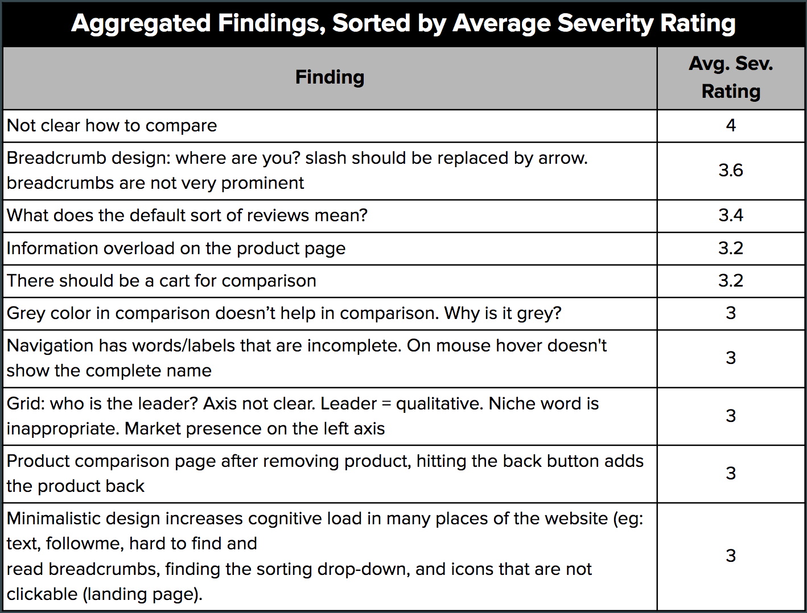

Project Overview
About G2 Crowd
G2 Crowd is a four-year-old startup based in Chicago, offering business software reviews. Buyers can read software reviews from their peers to find the right software for their business. Reviewers can also leave reviews about business software they already own or answer other users’ software questions. The third user group is software vendors, who users can contact directly from the G2 Crowd website to ask software questions. G2 Crowd is growing rapidly and currently has approximately 150,000 user reviews and nearly 800,000 user visits per month.
Objective
The objective of this engaement is for G2 Crowd to understand their users better and personalize the user experience for its users by implementing the changes we recommend.
Team
The team consists of 4 Master’s students from the University of Michigan School of Information and this is a course project for Usability Methods and Evalutation.
Method
To perform the usability evaluation of G2’s website, a variety of methods such as Interaction maps, Interviews, Surveys, Heuristics and Usability testing were conducted with a wide set of users.
Evaluation Methods
Interaction Map
The goal of creating the interaction map is to explore the website and understand the scope and experience of using the website. Exploring the interaction map also exposed the various functionalities that the website offers.
The value of doing this activity is to map out the interaction flow between different functionalitites within the website and analyse these jumps in navigation between different pages and functionalities of the website.
Interviews
Recruitment:
Interviewees were recruited with the help of G2 Crowd. G2 Crowd maintains a list of users who have indicated interest in participating in occasional user research projects related to G2 Crowd’s website, and all interviewees came from this list.
Findings
The interviews made us understand the user’s pain points. A list of the most pressing pain points are as follows.
-
Users find it difficult to understand some of the graphs
-
The lack of visual feedback in filter makes it hard for users to tell if they are seein new data or old
-
The search is not contextual but based on the product name.
Comparative evaluation
For this, we evaluated a list of competitiors and grouped them into direct, indirect, analogous, partial and parallel competitors. We then compared the different features offered by all the competitors and compared it agains that of G2 Crowd.
The following is a list of findings that was observed from the comparative evaluation of the competitor’s products.
-
It was observed that G2 crowd offers better and more features than any of its other competitors.
-
It was also observed that neither of its competitiors nor G2 crowd has a mobile application. This is an interesting finding since this correlates with interview data which says that users do not use mobile or smart phones to access G2 crowd for official purposes.
-
G2 Crowd is clearly more conscious of ensuring the credibility of reviewers
-
All indirect and direct competitors under the Gartner umbrella of companies have a more accurate keyword search than G2 Crowd
Surveys
A 29-question survey was conducted from March 9 - March 14, 2017 among 1,098 users of G2 Crowd’s website. The survey was created using Qualtrics software.
-
What kind of product information is important to users when they are making a purchase decision? (Quality of Content)
-
How satisfied are users with the functions of the website? (Quality of service)
-
Is the product information on G2 Crowd clearly displayed? (Visibility and Clarity)
-
What improvements would users like to see on G2 Crowd? (Scope for improvements)
Our Strategy
Our target population for the survey consisted of users of G2 Crowd’s website who had recently visited the site. Survey participants were recruited by G2 Crowd via email, and were chosen because they had recently submitted questions to software vendors using G2 Crowd’s website. Three separate groups of participants were contacted on three different stages.

Findings
We identified few of the key findings from our surveys.
-
The products comparison is confusing for users.
-
Many users of G2 Crowd use the live chat function and find it helpful
-
A significant proportion of G2 Crowd users found the visualizations of product ratings difficult to understand

Heuristic Evaluation
Our objective for this task was to evaluate G2 Crowd’s website using Nielsen’s Usability Heuristics and identify potential usability issues in the website.
Process

Key Findings
-
Many of the website’s pages have too much content and the content expresses too many different ideas.
Average Severity Rating: 3.4
-
Many of the website pages have no breadcrumbs to aid navigation.
Average Severity Rating: 3.6
-
The search interface does little to help users prevent and recover from errors.
Average Severity Rating: 3.2
Usability Testing
Our primary goals for the usability testings were to answer the following questions:
1) Is browsing products and product reviews on G2 Crowd intuitive to new users?
2) Are users able to easily compare multiple products they are interested in on G2 Crowd?
User Tasks

Our Findings
The aggregate findings of all the user testing is presented below along with its severity rating.
Video Presentation of Findings & Recommendation
An overview of all the findings and recommendation at various steps of the process is documented in the form of a video and was presented to the client. The video can be accessed below.
Next Steps
G2 Crowd has already fixed most of our findings with the suggested recommendation. As for the next steps, the client will resolve the other usability issues with the suggested recommendation.
Related Projects

Rakshaa
A mobile application design aimed at changing the steriotype of an emergency application being boring and not so useful.

Alexa-Priv
Explore the process of Experimental Design through which we designed an Alexa device with integrated usable privacy.